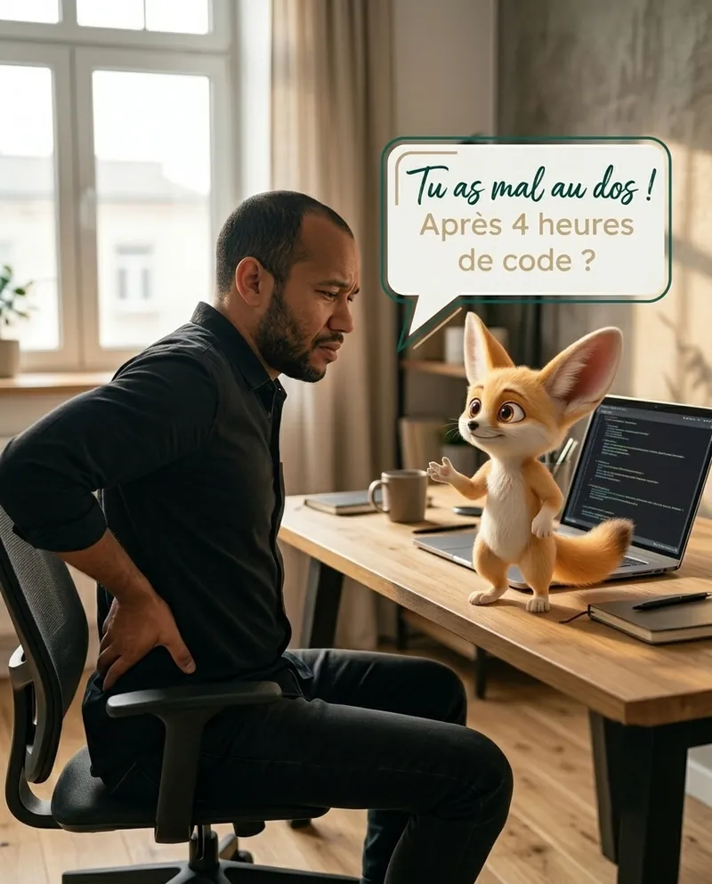
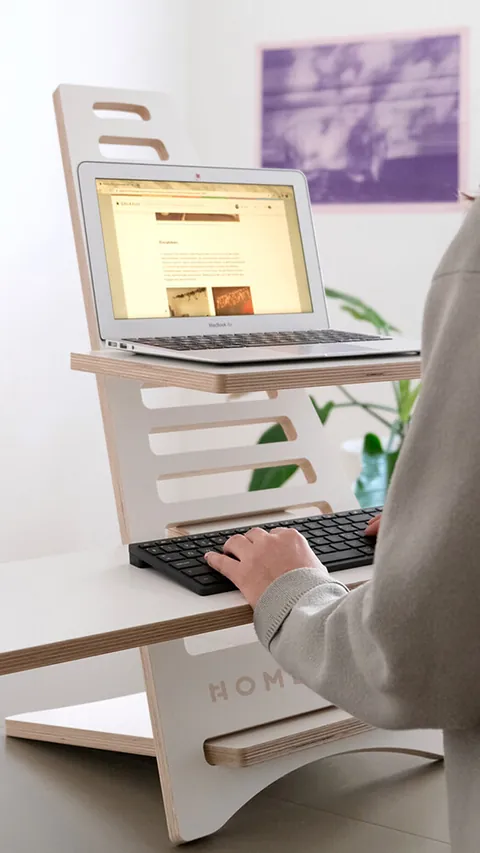
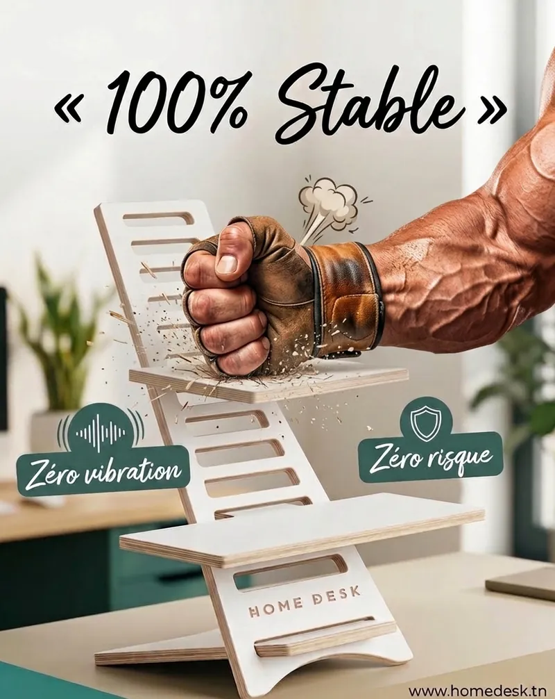

Écran à hauteur des yeux
Ton regard tombe droit sur le code, assis comme debout. La nuque arrête de plonger vers le laptop.
Plusieurs niveaux de hauteurHomeDesk se pose sur ton bureau actuel et transforme ton setup en poste assis-debout. Tu alternes en 5 secondes, entre deux commits.
À partir de 169 DT · Paiement à la livraison · Livraison gratuite

Tu connais la boucle : stand-up assis, sprint assis, debug assis, review assise. Le laptop à plat sur le bureau, la tête qui descend vers l'écran au fil des heures.
Ce n'est pas un bug de motivation. C'est ton setup qui est figé.

HomeDesk n'est pas un nouveau bureau. C'est une mise à jour de celui que tu as déjà.
installPose-le sur ton bureauIl s'assemble sans outil, en quelques minutes.configPlace laptop, clavier, sourisÉcran en haut, clavier en dessous, chacun à sa hauteur.runAlterne assis ↔ debout5 secondes pour changer de position, autant de fois que tu veux.Ton regard tombe droit sur le code, assis comme debout. La nuque arrête de plonger vers le laptop.
Plusieurs niveaux de hauteurUne session de debug qui coince ? Lève-toi et continue, sans rien débrancher.
Assis ↔ debout en 5 secPas besoin de tout racheter : tu ajoutes la position debout au bureau que tu as déjà.
Se pose sur un bureau existantRien à brancher, rien à mettre à jour, aucune pièce électronique à remplacer un jour.
100 % mécaniqueMaison, open space, coworking : il se démonte et voyage dans son sac de transport.
Sac offert · valeur 85 DTLignes minimalistes, blanc mat : ton bureau gagne en clarté, sans câbles en plus.
MDF stratifié blanc · découpe CNC💳 Tu ne paies qu'à la réception
Glisse pour comparer.

 AVANTAPRÈS
AVANTAPRÈS
4,9/5 · +200 professionnels équipés en Tunisie
« Je l'ai posé sur mon bureau d'open space. Je passe debout pour les longues sessions de debug, et le laptop est enfin à hauteur des yeux. »
« J'avais peur que ça bouge quand je tape. Le clavier est sur sa propre étagère, en dessous de l'écran, et ça reste stable. Monté en quelques minutes. »
« Je bosse en remote et parfois au coworking. Je le démonte, je le mets dans le sac et je retrouve mon setup partout. Payé à la livraison, aucun stress. »








C'est la première question des devs, et c'est normal. HomeDesk est découpé à la CNC dans du MDF stratifié de 18 mm d'épaisseur. Le clavier a sa propre étagère, sous celle de l'écran : tu tapes sans faire bouger ton laptop.
// homedesk.config.json — version Medium { "materiau": "MDF stratifié blanc, 18 mm", "etagere_ecran": "40 × 27 cm", "etagere_clavier": "54 × 22 cm", "pc_max": "17 pouces", "hauteur": "55 cm", "moteur": null }
Pas convaincu ? Satisfait ou remboursé.
Moins de 1,87 m → Medium. Plus de 1,87 m → Large. Tu ne le déplaceras jamais ? Prends l'Essentiel sans sac.

Jusqu'à 1,87 m · sac de transport + porte-clés

Plus de 1,87 m · étagère tél/tablette en plus
Pas besoin du sac ? HomeDesk Essentiel dès 169 DT (−30 DT).
Tu paies seulement quand tu reçois ton HomeDesk. Ensuite, tu as 3 jours pour l'essayer sur ton vrai setup. Pas convaincu ? Tu es remboursé.
Medium si tu mesures jusqu'à 1,87 m (hauteur 55 cm). Large au-delà de 1,87 m (hauteur 68 cm, avec une étagère pour téléphone ou tablette en plus).
L'étagère haute (40 × 27 cm) est pensée pour un PC portable jusqu'à 17 pouces. Avec un double écran, beaucoup gardent l'écran externe sur le bureau et le laptop sur HomeDesk.
Oui : l'étagère inférieure fait 54 × 22 cm sur la Medium et 54 × 27 cm sur la Large. Clavier et souris y tiennent côte à côte.
Non. Les pièces s'assemblent sans outil, en quelques minutes. Ensuite, passer d'assis à debout prend 5 secondes.
HomeDesk garde ton bureau actuel et y ajoute la position debout. C'est portable, sans moteur, et bien moins cher qu'un changement complet de bureau.
À la livraison, en espèces. Aucun paiement en ligne, aucun acompte. La livraison est gratuite partout en Tunisie.
Tu as 3 jours pour l'essayer chez toi. Pas convaincu ? Tu es remboursé.
Garde ton bureau. Ajoute la position debout. Paie seulement quand tu le reçois.
Dès 169 DT · Livraison gratuite · 3 jours pour essayer